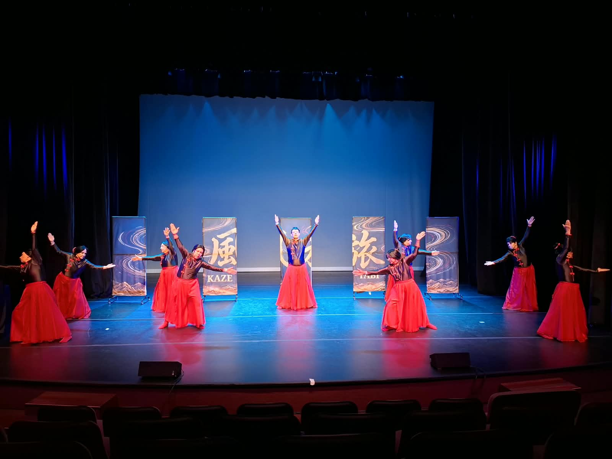

Dança que aproxima
Nos vemos no palco.
Confira as datas e os locais das próximas apresentações ou explore os eventos que já fizeram parte da nossa agenda.
Próximos encontros
Carregando a programação…

Encontros que ficam
Cada palco,
uma memória.
Uma apresentação também deixa história. Na Trajetória, reunimos registros dos encontros e festivais que marcaram o percurso do Viva Dança.
Percorra nossa trajetóriaNovas possibilidades em cena
Vamos criar um
novo encontro?
Se você está preparando uma mostra, um festival ou uma programação cultural, converse com a gente sobre levar o Viva Dança ao seu público.
Fale com o Viva Dança